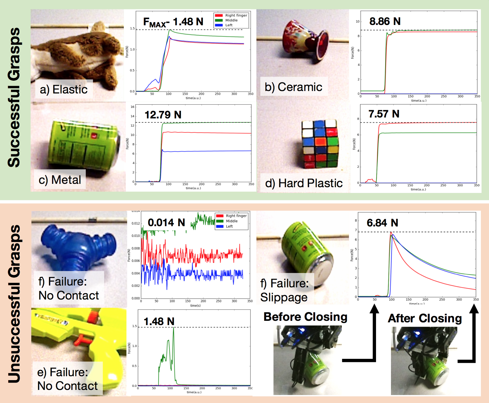

How can a robot grasp an unknown object without seeing it? In this paper, we present an attempt for grasping novel objects using tactile sensing and without prior knowledge of the objects' location or physical properties. Our key idea is to combine touch based object localization with tactile based re-grasping. To train our learning models, we created a large-scale grasping dataset with haptic recordings, images and material labels. For haptic representation, we propose an unsupervised auto-encoding scheme for learning haptic features, which shows a significant improvement over prior methods on a variety of tactile perception tasks. First, our touch localization model sequentially ``touch-scans'' the workspace and uses a particle filter to aggregate beliefs from multiple hits of the target. It outputs an estimate of the object's location, from which an initial grasp is established. Next, our re-grasping model learns to progressively improve grasps with haptic feedback based on the learnt features. This network learns to estimate grasp stability and predict adjustment for next grasp. Re-grasping thus is performed iteratively until our model identifies a stable grasp. Finally, we demonstrate extensive experimental results on grasping a novel set of objects using a real world manipulator.
Data
Here you can find documentation regarding the dataset collected. It contains haptic, visual and kinematic data on about 7800 grasp interactions on diverse objects collected with a multi-fingered underactuated adaptive gripper. The full dataset can be downloaded here. A visualization of a sample of the data and more detailed information is given below.

There are two main subsets of the data:
52 diverse objects with labels (material, object) with 50-60 trials per object. Each trial has exactly 2 grasps (initial grasp + re-grasp)
A miscellaneous unlabelled set of objects, where each trial has an arbitrary number of grasps (initial grasp + 2-3 re-grasps).
Detailed information on how the data is structured internally can be found in the README.